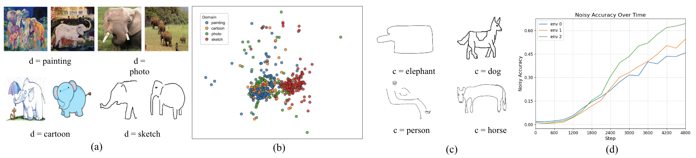
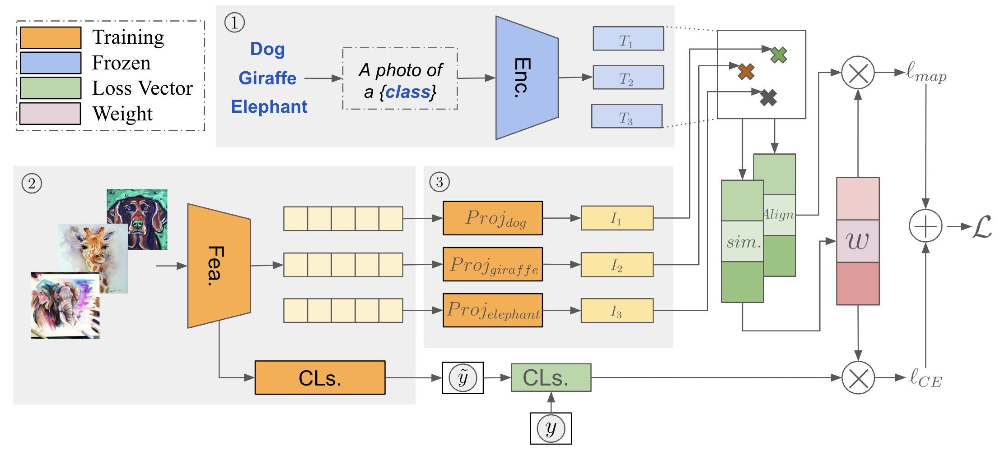
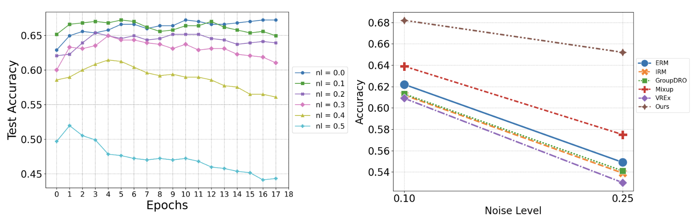
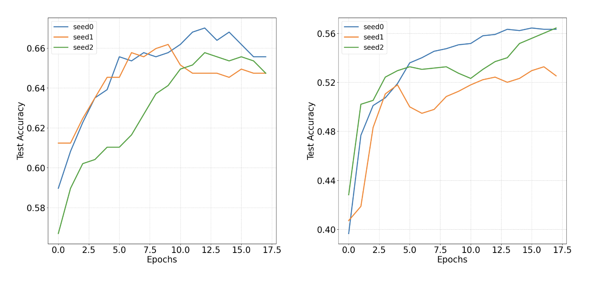
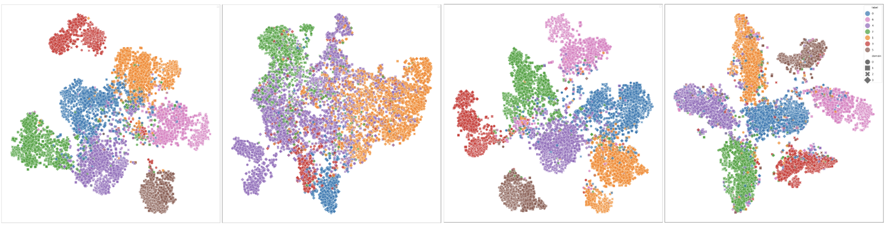

A3W
Anchor Alignment and Adaptive Weighting
for Robust Noisy Domain Generalization
Under review at Transactions on Machine Learning Research (TMLR)

Real-world machine learning systems face two critical challenges: distribution shift and label noise. Networks tend to overfit to spurious features in the training distribution, and noisy labels exacerbate this by causing existing domain generalization methods to fail at distinguishing invariant features from spurious ones. We propose A3W (Anchor Alignment and Adaptive Weighting), a sample reweighting algorithm guided by NLP anchors from pretrained language models. A3W leverages semantic representations as domain-invariant priors and dynamically adjusts each sample's contribution based on its distance to the corresponding anchor, improving resilience to both noisy labels and distribution shift.
Method
Semantic anchors are computed using a pretrained CLIP text encoder. For each class, a text prompt ("a photo of a [class]") is encoded into a normalized embedding on the unit hypersphere, providing domain-invariant prior knowledge.
Per-class linear projectors map image features into the same semantic space as the anchors. An alignment loss maximizes cosine similarity between projected features and their corresponding anchors, promoting domain-invariant representations.
Sample weights are computed via softmax over alignment costs with a temperature parameter. Samples closer to anchors receive higher weight, while noisy outliers are down-weighted. The final loss combines alignment loss and weighted cross-entropy.
Architecture

The encoder (Enc.) converts input text into embeddings that serve as fixed NLP anchors. The featurizer (Fea.) extracts image features, which are mapped to the anchor space via per-class projectors. The similarity module computes cosine similarity between projected features and anchors, and the alignment module creates deep copies for adaptive weight computation. The final loss combines alignment loss and weighted cross-entropy classification loss.
Results

A3W is most robust to noise injection, with accuracy decreasing by only 0.2 when noise increases from 0.1 to 0.25, compared to 0.4-0.5 for other methods.

Convergence trajectories on PACS and VLCS under three random seeds. A3W achieves stable convergence with consistently higher accuracy.
Feature Clustering

t-SNE embeddings on PACS. Color indicates class and marker shape indicates domain. From left to right: ERM, IRM, Mixup, and A3W. Compared to baselines, A3W produces more compact and well-separated clusters across both training and test domains, demonstrating its ability to learn discriminative, domain-invariant features.
Paper
Under review at TMLR. Preprint: arXiv:2503.17211